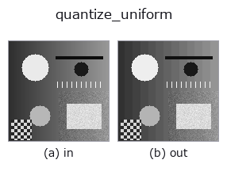

gray op• データ種: image → image
• 呼び出し: fullseye.apply(img, "quantize_uniform", a=0.5, b=0.5) (2-D は 1 画像 + 2 スカラつまみ a,b∈[0,1] のモデル)

*図は合成の入力 128×128 で実際に走らせた出力。左が入力、右が出力。点群は上から見た散布(明るさ = z)、1-D 列は折れ線、体積は z 方向の最大値投影、動画は中央フレーム、複素画像は振幅、絵にならない返り値は値そのもの。*
つまみ a を振る(0.1 / 0.5 / 0.9、もう一方は既定):
▸ quantize_uniform: knob a sweep (docs site)
*つまみ b は出力を変えない(実測: 0.1 / 0.5 / 0.9 で同一)。*
別の画像でも(合成シーン / 写真 / 硬貨。上段が入力、下段がその出力。つまみは既定):
▸ quantize_uniform: other inputs (docs site)
*4 列目はカラー (H,W,3) の入力。この op は色を跨がずに扱える(色チャネルを 3 本目の空間軸として畳み込まない)。*
一様量子化器(丸め)。`a がビット数 1〜8、b` は未使用。
`round(x * (L-1)) / (L-1)、L = 2**bits。刻みは Δ = 1/(L-1)`。
**`xpil_posterize` との違いはここで、無視できない**: あちらは PIL の実装で
下位ビットを切り捨てるので、出力の平均が入力より `Δ/2` だけ低い。
一様分布の入力で実測すると、bits=4 で平均誤差 `-0.0312(理論 -Δ/2 = -0.03125`)。
分散はどちらも `Δ²/12` で同じだが、偏りがある分だけ二乗誤差が
切り捨て: Δ²/12 + (Δ/2)² = Δ²/3 丸め: Δ²/12
と 4 倍ちがう。明るさを測る前段に置くなら丸めでなければならない。
適用条件と誤差(閉形式): 入力が刻みに対して十分ばらついている(量子化雑音が
入力と無相関とみなせる)とき、誤差は `[-Δ/2, +Δ/2]` の一様分布で、平均 0・
分散 `Δ²/12`。この仮定が崩れるのは平坦部で、そこでは誤差が信号と相関して
縞(バンディング)になる —— 誤差を雑音として扱いたいなら `dither_ordered` か
`dither_floyd_steinberg を通すこと。段差が見えているかは banding_map` で測れる。
• gallery2d_gray_arith ファミリ ガイド
• サンプルデータ カタログ(DL URL / ライセンス) — 2-D は skimage.data(BSD/public)+ 合成、3-D は実データ源(Stanford/PDS 等)の DL URL。
• 演算子の来歴・参考文献 — この op 族の元になった研究/手法の出典。
• アルゴリズムの正典(著者・年)と用途は上記ファミリ使い方ガイドに記載。
下のプログラムは実際に走ることを確かめてある(図と同じ入力)。Studio のヘルプではこのブロックがボタンになり、その場で読み込んで実行できる。
quantize_uniform 0.50 0.50
▸ Load this pipeline · Load & run
• gallery2d_gray_arith — py -3.11 examples/gallery2d_gray_arith.py
image を入力に取れる)identity · gaussian · mean_box · bilateral · unsharp · median · min_filter · max_filter
gray)gamma · quantize_lloyd_max · quantization_error · dither_ordered · dither_floyd_steinberg · companding_mu_law · banding_map · invert
*Provenance: ops.py — 2D operator registry. この per-op ノートは tools/opdocs.py md が自動生成(手編集しない)。*
© 2026 Kazufumi Furuse — Fullseye operator documentation. Licensed under Apache-2.0.
{kind=link}
{kind=link}